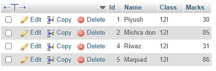

What is database and dbms? Listout the advantages and disadvantages of dbms.
A database is an organized collection of structured information or data, typically stored electronically in a computer system. Databases are used to store, manage, and retrieve data efficiently. The data in a database is organized in such a way that it can be easily accessed, managed, and updated.
Advantages of DBMS
Data Abstraction: hides the complexities of data storage from users.
Efficient data handling: Manages large amounts of data efficiently.
Concurrent access: supports simultaneous access by multiple users.
Data Integrity and Security: Ensures that only authorized users can access and modify data.
Disadvantages of DBMS:
Complexity: implementing a DBMS can be complex and time-consuming.
Cost: Licensing, maintaining, and operating a DBMS can be expensive.
Performance Overhead: The abstraction and additional features can sometimes lead to performance overhead.
Diffrence between file processing system and DBMS
| S.N. | File Processing System | Database Management System (DBMS) |
|---|---|---|
| 1 | Data is stored in separate files for each application. | Data is stored in a centralized database and shared among applications. |
| 2 | High data redundancy and inconsistency. | Minimizes data redundancy and maintains consistency. |
| 3 | No central control over data. | Provides central control and management of data. |
| 4 | Security features are limited or absent. | Offers robust data security and access control. |
| 5 | Data retrieval is difficult and time-consuming. | Efficient query processing enables faster data retrieval. |
Explain the different models of DBMS with advantages and disadvantages.
Hierarchical ModelData is organized in a tree-like structure. Each child record has only one parent. Example: IBM's Information Management System (IMS).
Advantages: Simple and easy to understand. Efficient for data with a clear hierarchy
disadvantages: Rigid structure; hard to reorganize or change relationships. Redundancy in data if multiple parents need the same child.
Network Model
Data is organized using a graph structure, allowing multiple parent-child relationships. Example: Integrated Data Store (IDS).
Advantages: Faster data access using direct link. Supports many-to-many relationships.
Disadvantages: Complex to design and maintain. Requires navigational knowledge to access data.
Relational Model
Data is organized into tables (relations) with rows and columns. Example: MySQL, PostgreSQL.
Advantages: Flexible and scalable; tables can be modified easily. Powerful query capabilities using SQL.
Disadvantages: Requires more processing power for relational operations. Performance may degrade with very large volumes of data.
Relational Database model
A relational database (RDB) is a way of structuring information in tables, rows, and columns. An RDB has the ability to establish links or relationships between information by joining tables, which makes it easy to understand and gain insights about the relationship between various data points.| S.N. | Relational Database Model | Other Database Models |
|---|---|---|
| 1 | Stores data in tables (rows and columns). | Stores data in trees, graphs, or objects. |
| 2 | Uses primary and foreign keys to relate data. | Uses pointers or parent-child links to relate data. |
| 3 | Supports SQL for easy data querying. | Uses complex navigational or object-oriented queries. |
| 4 | Minimizes redundancy through normalization. | Higher chances of data redundancy. |
| 5 | Flexible and easy to modify schema. | Rigid or complex to modify data structure. |
| 6 | Widely used in general-purpose applications. | Used in specific or legacy applications (e.g. CAD, telecommunication). |
Data redundency
Redundancy means having multiple copies of the same data in the database. This problem arises when a database is not normalized. DBMS removes the data that are already present. It helps in normalizing the data and connecting data in diffrent tables so that the data that are present in the database aren't repeated and don't take much space.
Who is Database Administrator (DBA)? What are the major responsibilities of DBA?
A Database Administrator (DBA) is a technical expert responsible for managing, maintaining, and securing a database system. The DBA ensures that the database is available, reliable, efficient, and secure, supporting the needs of the users and applications.Major responsibilities are:
Database Installation and Configuration
Database Design and Implementation
Data Backup and Recovery
Performance Monitoring and Tuning
Normalization and it's explanation
1. First Normal Form (1NF)
Rule: Each field must contain only atomic values (no multiple values in a single cell).
Applying 1NF:
| Student_ID | Name | Subject |
|---|---|---|
| 101 | Ram | Math |
| 101 | Ram | Science |
| 102 | Sita | English |
| 102 | Sita | Math |
2. Second Normal Form (2NF)
Rule: Must be in 1NF, and all non-key attributes should be fully dependent on the entire primary key (partial dependency removed).
Student Table:
| Student_ID | Student_Name |
|---|---|
| 1 | Ram |
| 2 | Sita |
Course Table:
| Course_ID | Course_Name |
|---|---|
| C1 | Math |
| C2 | English |
Enrollment Table:
| Student_ID | Course_ID |
|---|---|
| 1 | C1 |
| 2 | C2 |
3. Third Normal Form (3NF)
Rule: Must be in 2NF, and there should be no transitive dependency (non-key attributes should depend only on the primary key).
Applying 3NF:
Student Table:
| Student_ID | Student_Name | Department |
|---|---|---|
| 1 | Ram | Computer |
| 2 | Sita | English |
Department Table:
| Department | HOD_Name |
|---|---|
| Computer | Mr. Sharma |
| English | Ms. Koirala |
Write differentiate between centralized and distributed database systems.
| Centralized Database System | Distributed Database System |
|---|---|
| All data is stored at a single central location. | Data is stored across multiple physical locations. |
| Data management and control is centralized. | Data management is distributed among multiple sites. |
| Easy to maintain and control as everything is centralized. | More complex to manage due to distribution. |
| Failure at central site affects entire system. | Failure of one site may not affect entire system. |
| Lower communication cost since all data is local. | Higher communication cost due to data transfer between sites. |
| Data redundancy is minimal or none. | Data redundancy is possible to improve reliability. |
| Performance may degrade if many users access simultaneously. | Better performance with parallel processing and local access. |
| Typically simpler to design and implement. | Design and implementation are complex due to distribution. |
Different types of keys
A primary key is a unique key, meaning it can uniquely identify each record in a table.The minimal set of attributes that can uniquely identify a tuple is known as a candidate key.
A foreign key is an attribute in one table that refers to the primary key in another table.
What is SQL? Explain its components and common functions.
SQL is a standard language used to manage and manipulate data in a relational database. It allows users to create, read, update, and delete data easily using commands.Some sql componenets:
Databases: Databases are structured collections of data organized into tables, rows, and columns. Databases serve as repositories for storing information efficiently and provide a way to manage and access data.
Tables: Tables are the fundamental building blocks of a database, consisting of rows and columns . Tables ensure data integrity and consistency by defining the structure and relationships of the stored information.
Queries: Queries are SQL commands used to interact with databases. They enable users to retrieve, update, insert, or delete data from tables, allowing for efficient data manipulation and retrieval.
Some functions in sql are min, max, floor ceiling, etc.
SQL
CREATE TABLE students (Id INT AUTO_INCREMENT PRIMARY KEY,
Name VARCHAR(50),
Class VARCHAR(10),
Marks INT(3)
);
Adding data:
INSERT INTO students (Name, Class, Marks)
VALUES ('Piyush', '12I', 30),
('Mishra don', '12I', 40),
('Gunda', '12I', 90),
('Riwaz', '12I', 31),
('Maqsad', '12I', 86);

Displaying data:
SELECT * FROM students;
Changing Marks:
UPDATE students
SET Marks = 85
WHERE Name = 'mishra don';

deleting the data with id 3
delete from students where id = 3 ;

Data Dictionary
A data dictionary is a centralized repository that contains information about the structure of a database, such as tables, fields, data types, constraints, and relationships. It helps developers and users understand how data is organized and how it can be used.
Primary Key
A primary key is a unique identifier for each record in a database table. It ensures that each row can be uniquely identified and cannot contain NULL values.
Relationship
A relationship in a database defines how two or more tables are connected. Common types include one-to-one, one-to-many, and many-to-many relationships, typically established using foreign keys.
Data Manipulation Language
DML is a subset of SQL used to retrieve, insert, update, and delete data in a database. Common DML commands include SELECT, INSERT, UPDATE, and DELETE.
Structured Query Language
SQL is a standard programming language used to manage and manipulate relational databases. It includes both DML and DDL commands for interacting with data and database structures.
Data Integrity
Data integrity refers to the accuracy, consistency, and reliability of data stored in a database. It is maintained through rules, constraints, and relationships that enforce valid data entry and usage.
Data Definition Language
DDL is a subset of SQL used to define and modify the structure of database objects such as tables, indexes, and schemas. Common DDL commands include CREATE, ALTER, and DROP.
Data Security
Data security involves protecting data from unauthorized access, breaches, and corruption. Techniques include user authentication, encryption, access control, and audit trails.
Database System
A database system refers to the combination of the database itself and the database management system (DBMS) that interacts with it, along with applications and tools that manage and use data effectively.